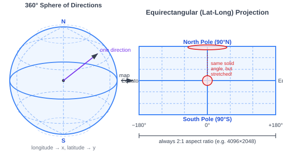
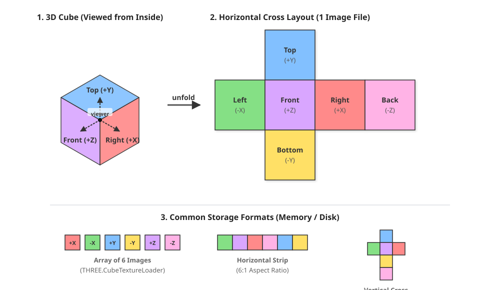
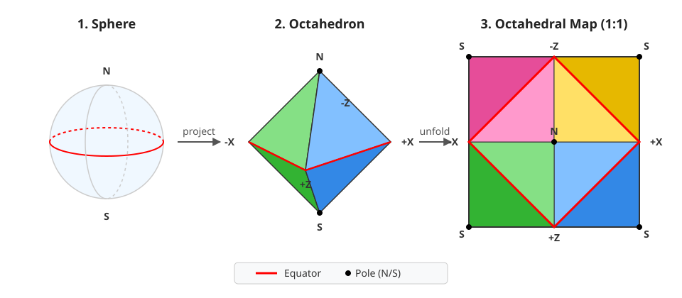

Page 22: Environment Maps
An environment map is essentially a 360-degree picture that captures everything visible from a single, fixed point in space. Imagine standing in the middle of a room and painting everything you see—front, back, left, right, up, and down—onto the inside of a giant, invisible shell surrounding you.
In 3D graphics, we use these maps for two main purposes:
- Skyboxes / Backgrounds: We effectively “paint the world on the walls” so that it looks like there is a complicated environment beyond the 3D objects we actually make. This works best for things that are at a distance.
- Reflections and Lighting: We use the environment map as a way to fake inter-object interactions. We can use it to determine what light is coming from a particular direction, allowing us to fake reflections and complex lighting.
Environment maps are different from regular texture maps because they are not flat: they need to wrap completely around their center point. Therefore, the problem that we face is how to represent this non-flat image. We’ll discuss that on this page. On the next pages, we’ll use these environment maps.
In old versions of three.js, only one form of environment map representation was supported (a Cube Map). We will learn about this method. However, in our code we can use more modern methods that have many advantages. Unfortunately, not all of the workbook code has been updated, so you will still see examples of Cube Maps.
The 2023 video gave a quick introduction to environment maps including their applications. It only discusses cube maps.
Environment Map Geometry
The core idea of an environment map is that it is what you see from a particular point. This is similar to the focal point of a regular perspective camera, but we consider all directions. The single focal point concept is important: it means that distance does not matter, just direction.
We could capture all of these directions by placing some geometry around the point. There are some choices:
- A Sphere - this is the most logical because it uniformly captures the directions. However, it can be complicated to flatten the images.
- A Cube - this has the advantage that it is simple, and because it is just polygons, it can be easy to draw. However, we need to handle the six sides independently, the distances to the center vary leading to uneven sampling, and we need to handle things around the edges carefully.
- A Cylinder - doesn’t have the problem that spheres have with being hard to flatten (the sides can be unrolled, and the top and bottom caps are flat). Since we usually care more about what is around us than what is above and below us, handling the top and bottom as special cases is often reasonable. However, it has all of the problems of a cube without having the advantage of being possible with a small number of polygons. This representation was used in some important historical systems, such as Apple’s Quicktime VR, before polygon drawing hardware was common.
- An Octahedron - is like a cube, but it has 8 triangular faces rather than 6 square ones. It has the advantages of a cube (its polygons), but even more so (triangles).
Environment Map Projections
Given the shape that we are using for an environment map, we can then decide how to map it to flat surfaces for storage. The problem is similar to making a map of the world: any way that we flatten the world will distort it.
{kind=link}

Every environment map represents light directions on the surface of a sphere. Storing this as a flat image always involves a projection — a choice of how to map the sphere to a rectangle. The equirectangular projection maps longitude to x and latitude to y, creating a 2:1 rectangle. The poles are a single point on the sphere but become entire horizontal edges in the image — a severe distortion.
Equirectangular Projections
The most common way to map the sphere to a flat rectangle for texture storage is an equirectangular projection. In this mapping, horizontal lines map to different latitudes. The equator is the middle of the image. The projection maps the north pole (the single point at the top of the sphere) to the entire top of the image. This stretching near the poles can be problematic.
Equirectangular projections lead to images that have a 2:1 aspect ratio (twice as wide as tall). A single image captures the entire map. There is a single seam (the left and right edges wrap around). There are severe distortions at the poles (top and bottom), but often with environments, what is directly overhead (or directly below) the viewpoint is not as important as what is in the side directions.
Equirectangular projections are now handled natively by three.js. The image files are quite common.
You might notice that environment map files often have non-standard image formats such as .hdr or .exr (rather than the more common .png or .jpg). These formats are high-dynamic range (HDR) formats. They use floating point numbers so they can represent very bright and very subtle colors. This is important because a single environment may include both bright lights and dark areas.
Cube Maps
A cubemap projects the 360-degree environment onto the six inside faces of a cube.
- How it works: It is composed of 6 regular pictures that fit perfectly together at the seams. You can capture this in the real world by placing a camera on a tripod with a 90-degree field of view lens and taking a picture in all six directions (up, down, left, right, front, back).
- Pros & Cons: Cubemaps are a popular choice because they are easy to author and intuitively look like standard pictures. Geometrically, a box only requires 12 standard triangles to draw. However, because the corners of a cube are farther away from the center than the flat faces, it can create uneven sampling issues, sometimes making the seams visible if the filtering isn’t handled perfectly.
{kind=link}

Cube Maps were the common standard for environment maps. Originally this was all that three.js supported. Working with a cube map requires loading 6 files in the correct orientations. While three still supports cube maps (and many of the examples in the workbooks still use them), we generally prefer equirectangular projections because they are more convenient (only 1 image), and allow for better filtering (fewer seams, more uniform distortions).
Octahedral Mapping
Octahedral mapping is a newer technique. I had not heard of it until recently. However, it is very commonly used in game engines including Unreal and Godot. The Octahedral mapping is efficient (since it uses polygons packed tightly), and does not have as much pole distortion.
{kind=link}

An octahedron can be unfolded. Here, the north pole is placed at the center.
Three.js does not support octahedral mapping (yet).
An Example
Here is an example environment map downloaded from Poly Haven. They make great resources available with permissive licenses.
Here is an equirectangular image (this is a .jpg version, there is also a exr version
).

In the old days, we had to convert this to a cube map:
{kind=link}
{kind=link}
{kind=link}
{kind=link}
{kind=link}
{kind=link}
Here is a demo that uses both of them. It shows how the environment map can be used for both reflections and for a skybox. If you notice, the reflected objects in the EXR version are slightly brighter because more light comes from the sky.
Loading Maps in Three.js
Three.js provides loaders for environment map images. In general, you create a loader object, provide it with parameters, and then use its load method to load the images and produce the texture.
The load method works asynchronously. In some cases, the texture cannot be used until it is loaded. Therefore, the texture is typically set up in a callback.
1import { EXRLoader } from 'three/addons/loaders/EXRLoader.js';
2import { RGBELoader } from "three/addons/loaders/RGBELoader.js";
3
4// const loader = new THREE.RGBELoader(); // for .hdr files
5const loader = new EXRLoader();
6loader.load('outdoor.exr', (texture) => {
7 texture.mapping = THREE.EquirectangularReflectionMapping;
8 scene.background = texture; // use as skybox
9 scene.environment = texture; // use as light source for PBR materials
10});There are separate methods for loading the different types of environment files.
The EXR and RGBE loaders are not “built-in” to three, and must be imported (lines 1-2). In the workbooks, we use three/addons/ because of how we have set up the import maps in the html files.
Line 6 loads the environment map asynchronously. Because we cannot use the texture until it has been loaded, we provide a callback that processes it when it is ready. Lines 6-9 define a function that is called when the texture is ready. It sets the projection to Equirectangular to inform three.js of the type of projection in the file. The next lines add the environment map to the scene - as the background that we see, and as the source of lighting.
There is a similar method for T.CubeTextureLoader(). One big difference: it’s load method requires 6 file names (one for each face of the cube).